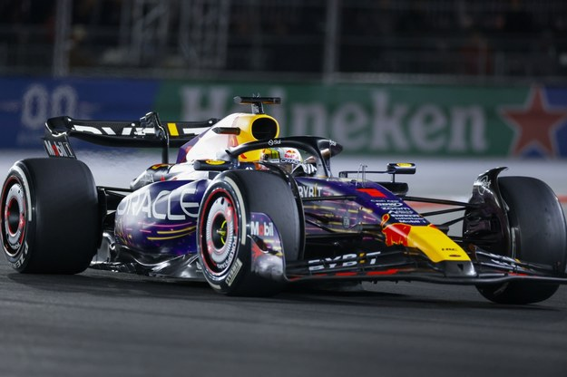
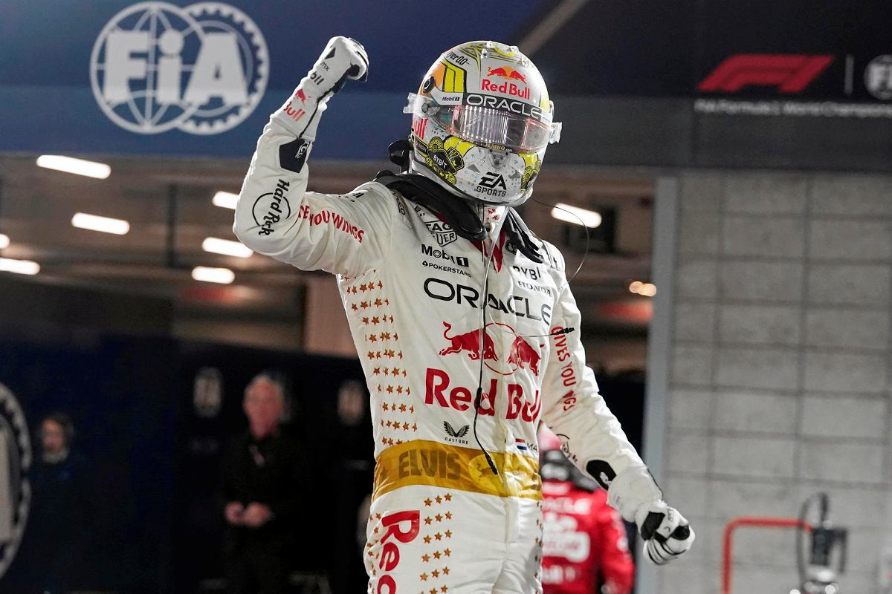

| Max Verstappen - urodził się 30 września 1997 w Hasselt w Holandii
jest kierowcą wyścigowym, trzykrotny mistrz świata Formuły 1 w sezonach 2021, 2022 i 2023. W wieku 17 lat i 166 dni został najmłodszym kierowcą, który uczestniczył w wyścigu Formuły 1. Jego debiutanckim wyścigiem było Grand Prix Australii 2015 dla Scuderii Toro Rosso. Jest także najmłodszym kierowcą, który zdobył najszybsze okrążenie, miejsce na podium oraz wygrał wyścig Formuły 1. |
|  | Verstappen, tak jak większość kierowców zaczął karierę od kartingu, zdobywając kilka tytułów krajowych, dwa tytuły mistrza Europy i tytuł mistrza świata w 2013 roku. Rok później startował w serii Florida Winter Series – tam pięciokrotnie stanął na podium, trzykrotnie startował z pole position i wygrał dwa wyścigi. W tym samym roku startował w Europejskiej Formule 3, dziesięciokrotnie zwyciężając i stając na podium szesnastokrotnie – to dało mu trzecie miejsce. |
| Od 2015 startuje w Formule 1. Pierwszy sezon spędził w zespole Toro Rosso, który reprezentował także w czterech pierwszych rundach sezonu 2016. Tuż przed Grand Prix Hiszpanii 2016 został awansowany do zespołu Red Bull Racing. 3 września 2023 roku wygrał 10 wyścig Formuły 1 ze rzędu bijąc przy tym dotychczasowy rekord Sebastiana Vettela (9 zwycięstw) w ilości kolejnych zwycięstw w sezonie. Łącznie w tym sezonie wygrał 19 razy! |  |